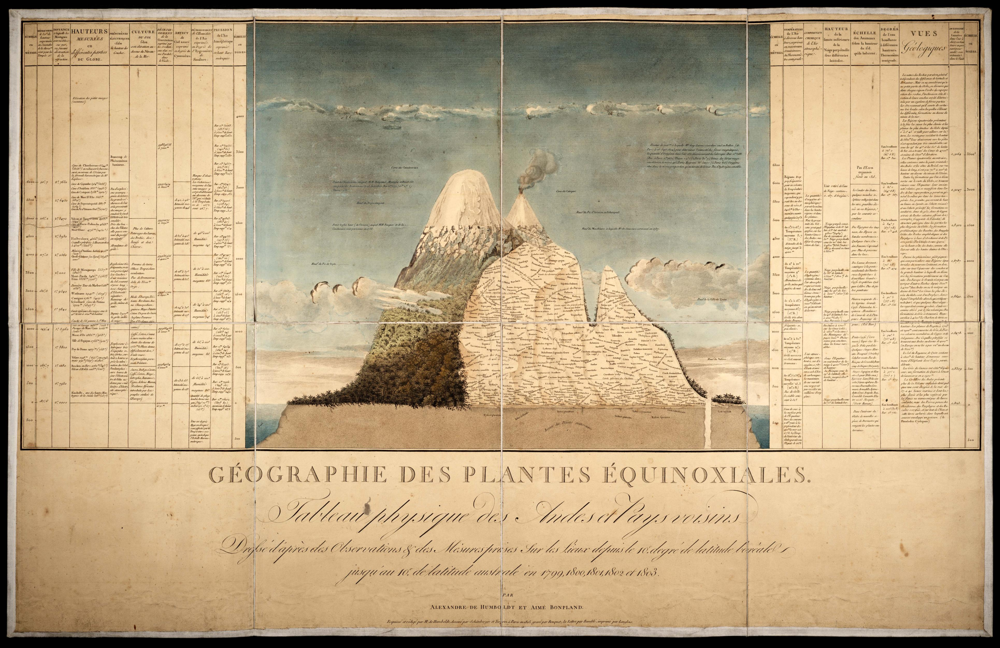
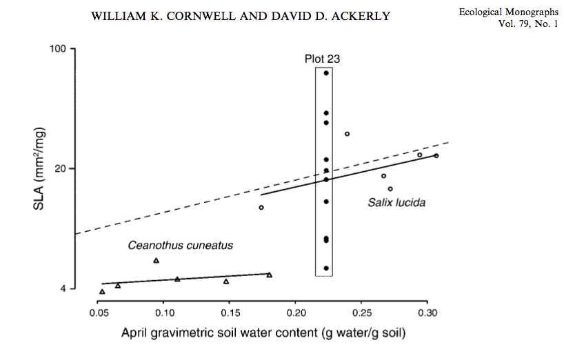

name: inverse layout: true class: center, middle, inverse --- # Diversity and Ecosystems .footnote[follow along at wcornwell.github.io] --- layout: false .left-column[ ## Review from last lecture ] .right-column[ - *Population*: Interacting individuals of the same species - *Community*: Interacting populations of different species - *Ecosystem*: Communities and the environment where they live ] --- # Outline for this lecture -- - Aspects of diversity -- - types of diversity: taxonomic, functional, genetic -- - scales of diversity -- - Ecosystems -- - conservation relevance -- - general principles: cycles --- class: center, top <p></p> Alexander von Humboldt ~1799 --- class: center, top #Biome vs. Ecosystem ? -- ###Often used interchangably, but "biomes" are usually larger and refer more to the climate region; ecosystems are often smaller in geographic scale and refer more to the acctual organisms and their functions --- class: center, middle <img src="http://www.australiasoutback.com/~/media/Atdw/darwin-and-surrounds/Things%20to%20do/9000304/main/tnt_landscape__9024130_nttc_magnetic_termite_mounds__litchfield_park__6406l256.ashx?bc=White" alt="Drawing" style="width:550px;"/> ###In an ecosystem the organisms and the inorganic factors alike are components which are in relatively stable dynamic equilibrium. - Tansley 1935 --- # Three ideas from Robert Whittaker 1. Populations turnover across gradients 2. Diversity is arranged at nested spatial scales 3. Biomes at the larges scale are at least in part a function of climate --- class: center, top <img src=" http://www.zo.utexas.edu/courses/bio301/chapters/Chapter4/fig4.15.jpg " alt="Drawing" style="width:550px;"/> --- <img src="http://images.tutorvista.com/content/biodiversity/diversity-perspectives.jpeg " alt="Drawing" style="width:550px;"/> --- <img src="http://images.tutorvista.com/content/biodiversity/diversity-perspectives.jpeg " alt="Drawing" style="width:550px;"/> ### Alpha, Beta, and Gamma Diversity (Robert Whittaker) <img src="http://images-mediawiki-sites.thefullwiki.org/02/2/4/9/43702942042188524.png" alt="Drawing" style="width:100px;"/> --- class: left, middle ## Diversity has different components - Diversity may be thought of as: - Taxonomic: e.g. number of species - Genetic: e.g. number of alleles - Phylogenetic: e.g. number of years of evolutionary history - Functional: e.g. number of functions - All have alpha, beta, and gamma components - All have within trophic and among trophic level components --- <img src=" http://www.easybiologyclass.com/wp-content/uploads/2016/01/What-is-Beta-Diversity-Easybiologyclass.jpg " alt="Drawing" style="width:550px;"/> --- class: center, top <p></p> --- ## Microbes are organisms too "Diversity in gut bacterial community of school-age children in Asia" Nakayama et al. 2015 <img src="http://www.nature.com/srep/2015/150223/srep08397/images_article/srep08397-f6.jpg " alt="Drawing" style="width:750px;"/> --- class: center, middle, inverse <img src="http://upload.wikimedia.org/wikipedia/commons/thumb/d/d0/Aerial_view_of_the_Amazon_Rainforest.jpg/1280px-Aerial_view_of_the_Amazon_Rainforest.jpg" alt="Drawing" style="width:700px;"/> --- class: center, middle, inverse <img src="http://upload.wikimedia.org/wikipedia/commons/2/2d/Picea_glauca_taiga.jpg" alt="Drawing" style="width:700px;"/> --- class: center, middle, inverse <img src="http://www.hayyoo.com/images/2011/blooming-desert.jpg" alt="Drawing" style="width:700px;"/> --- class: center, middle, inverse #An accurate view of the world: species are unique entities <img src="http://home.messiah.edu/~chase/articles/gauchchase/imagepage3a.png" alt="Drawing" style="width:550px;"/> (Robert Whittaker 1967) --- class: center, middle, inverse <img src="http://www.rowland.harvard.edu/rjf/lewis/images/InvassphotosRow.jpg" alt="Drawing" style="width:550px;"/> --- name: how layout: false .left-column[ ## Accuracy in a complex world overwhelms the brain ] .right-column[ Current diversity ```remark # Angiosperms 304,419 species* --- # Gymnosperms 1,104 species* ``` .slides[ .first[ Gymnos <img src="http://static.guim.co.uk/sys-images/Guardian/Pix/pictures/2012/8/28/1346149759217/A-pine-cone-008.jpg" alt="Drawing" style="width: 90px;"/> ] .second[ Angios <img src="http://upload.wikimedia.org/wikipedia/commons/8/89/Pretty_purple_wild_geranium_flower_in_bloom_geranium_maculatum.jpg" alt="Drawing" style="width:90px;"/> ] ] .footnote[* source [the plant list](http://www.theplantlist.org/)] ] --- class: center, middle, inverse # Robert Whittaker 1975 <img src="../graphics/whitiker_biome.jpg" alt="Drawing" style="width:550px;"/> --- class: center, middle, inverse <img src="../graphics/biome_map.jpg" alt="Drawing" style="width:750px;"/> --- <img src="http://www.metoffice.gov.uk/media/image/f/s/Figure-4-Global-cells(edit)2.jpg" alt="Drawing" style="width:750px;"/> --- class: left, middle ## Features of a useful ecosystem classification: -simple enough to be useful in mapping, thinking, and planning -capture something measurable (esp. "functional") about the organisms on the ground -designed well for the "extent" of the study or plan -consistently "lumped" or "split" -useful for "ecosystem-level conservation planning" --- class: center, middle, inverse <img src="../graphics/trophic.jpg" alt="Drawing" style="width:550px;"/> --- class: center, middle, inverse ##Food webs <img src="../graphics/ricklefs_foodweb.png" alt="Drawing" style="width:550px;"/> Ricklefs and Miller p175 --- class: center, middle, inverse ## Organizing concepts amid the chaos: energy and elements <img src="http://ietc.wikispaces.com/file/view/ecosystem_cycle.jpg/31732003/ecosystem_cycle.jpg " alt="Drawing" style="width:400px;"/> ### Conservation goal: keep the element and energy cycles intact --- # What are the three most important elements to worry about from conservation perspective? --- - Carbon: Climate change + all energy flow happens via C molecules -- - Nitrogen: all proteins have N -- - Phosphorus: all DNA --- class: center, top, inverse How would you describe this difference? <img src=" ../graphics/eutroph.jpeg " alt="Drawing" style="width:500px;"/> -- ## New terms: eutrophic versus oligotrophic --- class: center, top, inverse ## Scaling up from leaf to globe: the global carbon cycle -- <img src="../graphics/CCycle_Ricklefs.jpg" alt="Drawing" style="width:550px;"/> figure from Ricklefs --- <img src=" http://image.slidesharecdn.com/nitrogencycle-100630105502-phpapp01/95/nitrogen-cycle-1-728.jpg?cb=1331620263 " alt="Drawing" style="width:550px;"/> --- <img src=" http://www.visionlearning.com/img/library/large_images/image_6668.jpg " alt="Drawing" style="width:550px;"/> --- <img src=" http://warnerfc.com/img/photos/fertilizer_bag.png " alt="Drawing" style="width:250px;"/> <img src=" http://timesofsandiego.com/wp-content/uploads/2014/11/Sewage_1-e1416621334936.jpg " alt="Drawing" style="width:450px;"/> --- <img src=" ../graphics/eutroph.jpeg " alt="Drawing" style="width:500px;"/> --- <img src=" http://www.nature.com/scitable/content/ne0000/ne0000/ne0000/ne0000/62238224/Sigman&Hain_NatureEdu-626_1_2.png " alt="Drawing" style="width:550px;"/> --- # Diversity across the globe -- from molecules <img src="http://upload.wikimedia.org/wikipedia/commons/8/81/ADN_animation.gif" alt="Drawing" style="width: 150px;"> -- to the globe <img src="../graphics/biome_map.jpg" alt="Drawing" style="width:250px;"/> -- - Components of diversity: taxonomic, genetic, phylogenetic, and functional -- - Scales of diversity: alpha, beta, and gamma -- ``` A functional understanding of the world's diversity starts at the elemental level (C, N, and P) and works up. ```